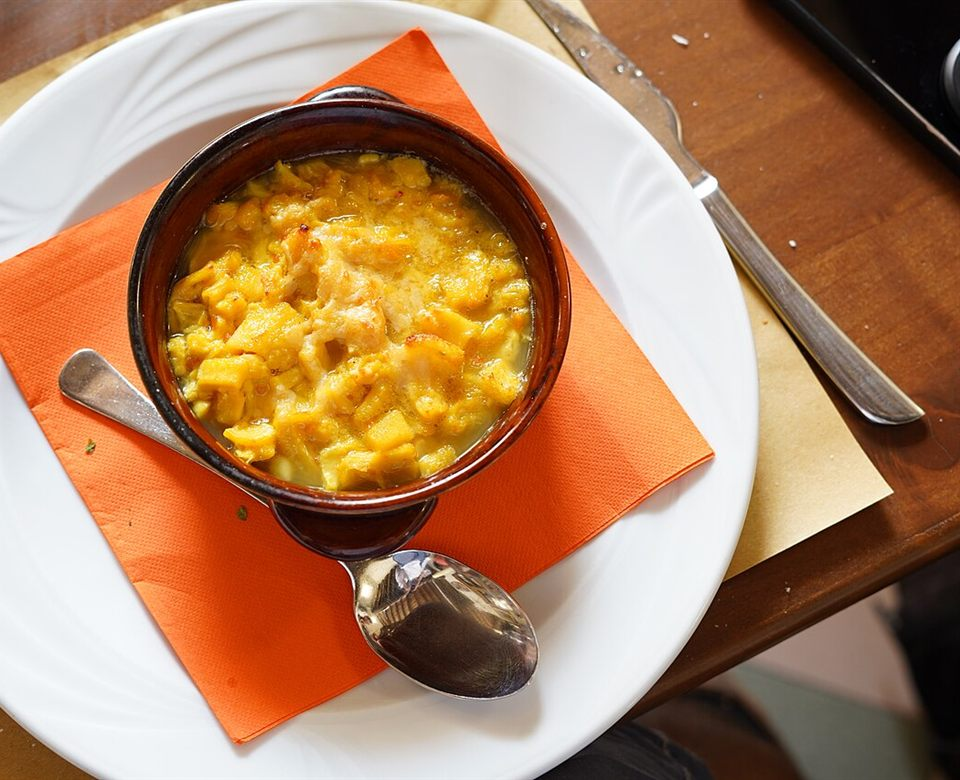
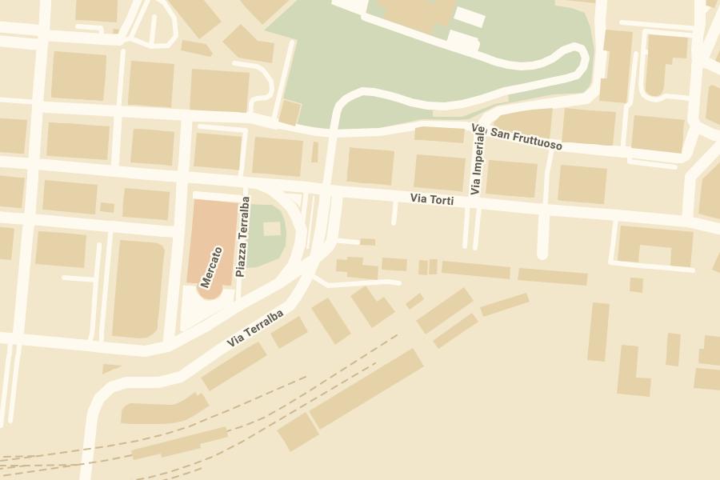

Menu fisso
dal lunedì al sabato
11 €
- Primo
- Secondo con contorno
- Acqua e ¼ di vino
Piazza Terralba 34r · Genova
Cucina genovese a pranzo, dal lunedì al sabato. Menu fisso da 11 € con acqua e vino compresi, anche da asporto.

Il menu
A pranzo puoi scegliere uno dei due menu fissi oppure ordinare alla carta. I piatti cambiano spesso: chiedi quelli del giorno.
dal lunedì al sabato
11 €
con il primo al pesto
12 €



Piatti a titolo di esempio: il menu del giorno può cambiare.
Asporto e consegna
Tutti i piatti si possono ordinare da portare via o con la consegna a domicilio. Chiamaci o scrivici su WhatsApp; la consegna si può ordinare anche su Just Eat.
Orari e dove
16143 Genova, quartiere San Fruttuoso.
| Lunedì | 12:00 – 15:00 |
|---|---|
| Martedì | 12:00 – 15:00 |
| Mercoledì | 12:00 – 15:00 |
| Giovedì | 12:00 – 15:00 |
| Venerdì | 12:00 – 15:00 |
| Sabato | 12:00 – 15:00 |
| Domenica | Chiuso |
D'estate c'è anche il dehors, per mangiare all'aperto.
